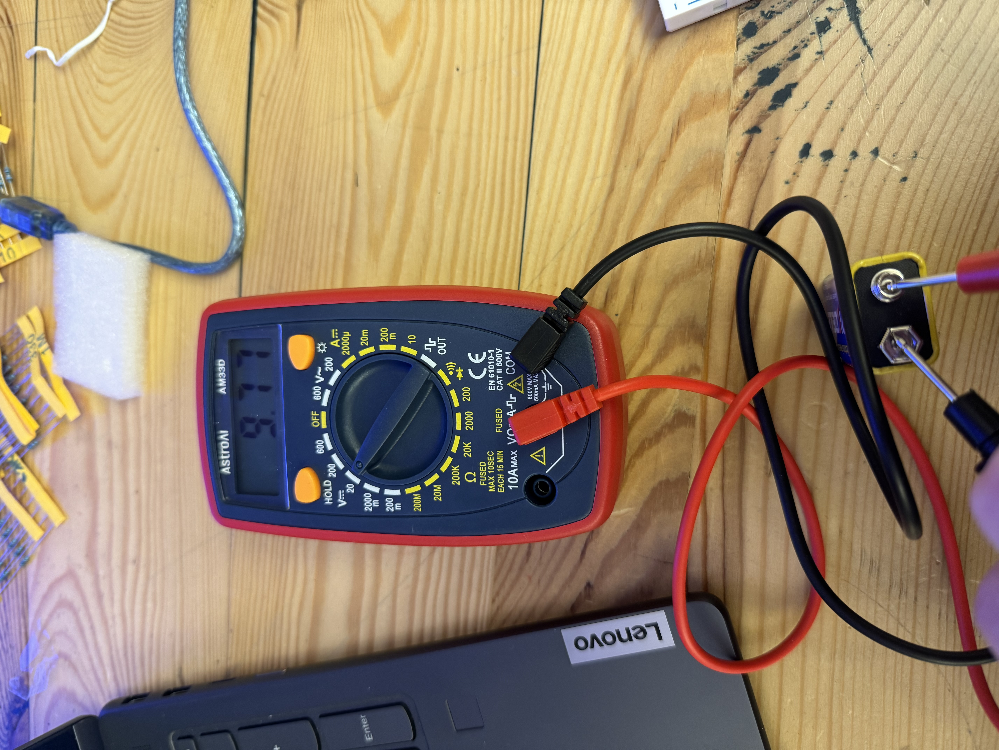
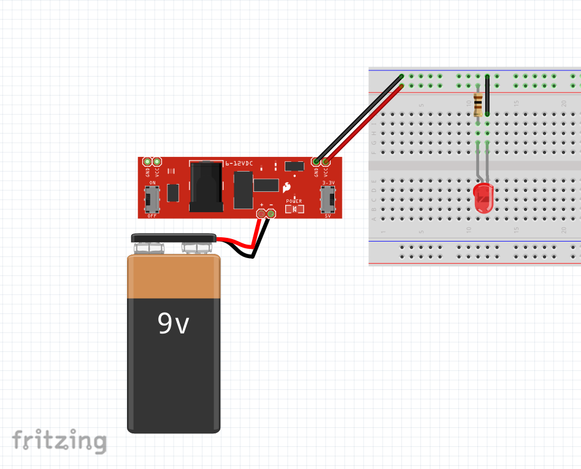
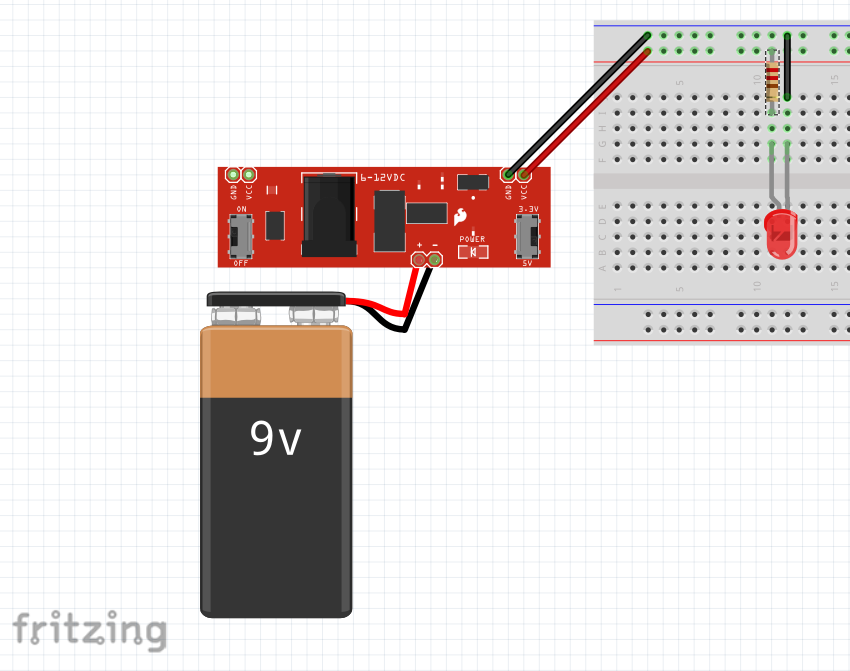
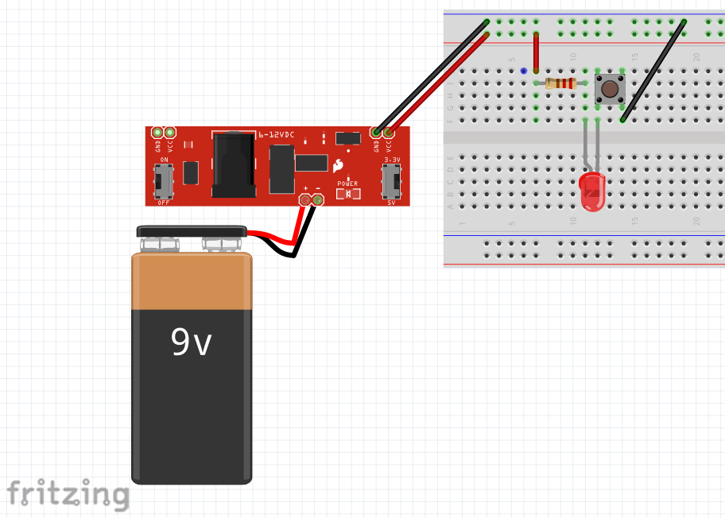
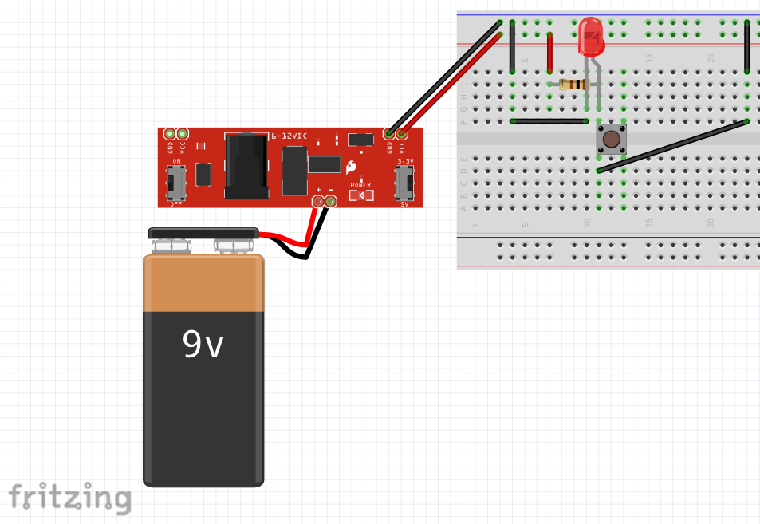

Course: ATLS 3300
Student: Sammy Muroff
Assignment: Simple Circuits, LEDs, and Resistors
The goal of this lab was to learn the basics of electrical circuits. To achieve this we built simple LED circuits using a breadboard. Through this lab, I explored how voltage, current, and resistance relate to one another, how polarity affects LEDs, and how switches can be used to control the flow of electricity in circuits.
Connect the power supply module to the breadboard, make sure that the positive and negative pins aligned correctly with the breadboard power rails. Then connect the 9V battery to the barrel jack on the module and turn the module on to supply power to the board. Make that you are using the 3.3V side of the power supply.
Using a multimeter set to measure DC voltage, test both power rails on the breadboard. One side should measure 3.3V and the other side approximately 5V. This confirms that the power supply module is functioning correctly.
Measuring voltage with a multimeter.
LEDs must be protected from excessive current at all times. Connecting an LED directly to a power source can cause too much current to flow, which can damage or destroy the LED. A resistor is used in series with the LED to limit current.
Ohm's Law was used to calculate the required resistance:
R = V / I
For a 3.3V power source and a target current of 30 mA:
R = 3.3V / 0.03A = 110Ω
Since a 110Ω resistor was not available, a 100Ω resistor will do. This results in a current of approximately 33 mA, which is within the safe operating range of the LED.
For a 5V power source:
R = 5V / 0.03A ≈ 167Ω
Since a 167Ω resistor was not available, a 220Ω resistor will do. This results in a current of approximately 33 mA, which is within the safe operating range of the LED.
LED circuit with 3.3V power.
LED circuit with 5V power.
Add a push button to the LED circuit so that the LED will only turn on when the button was pressed. The push button acts as a momentary SPST switch, completing the circuit only while it is being pressed.
3.3V LED circuit with a button.
To create a ircuits LED is on by default and turns off when the push button is pressed a path of less resistance around the led needs to be created. This circuit demonstrates a logical NOT operation, since pressing the button inverts the state of the LED.
LED off when button pressed.
One issue I encountered was wiring the LED backwards, which prevented it from lighting. Fixing the polarity resolved the issue. Using the multimeter helped confirm that the correct voltages were being supplied throughout the circuit.
This lab provided a strong introduction to basic electronics and circuit design. The concepts learned here will be important for future labs involving more complex components and systems.